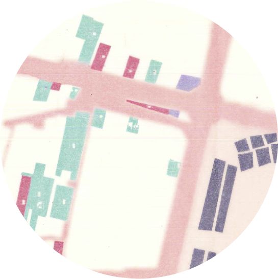
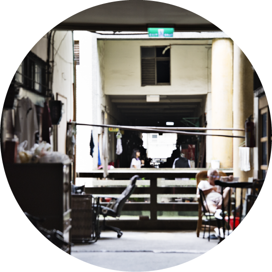
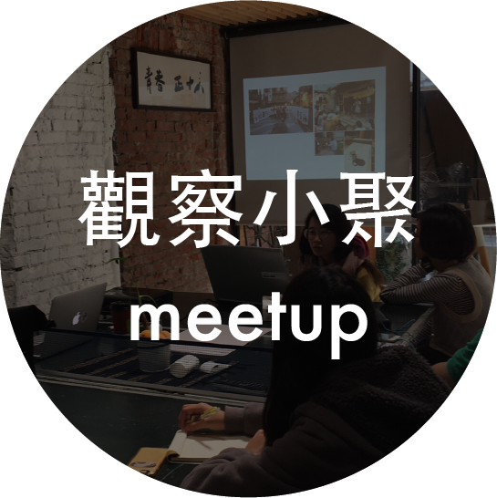
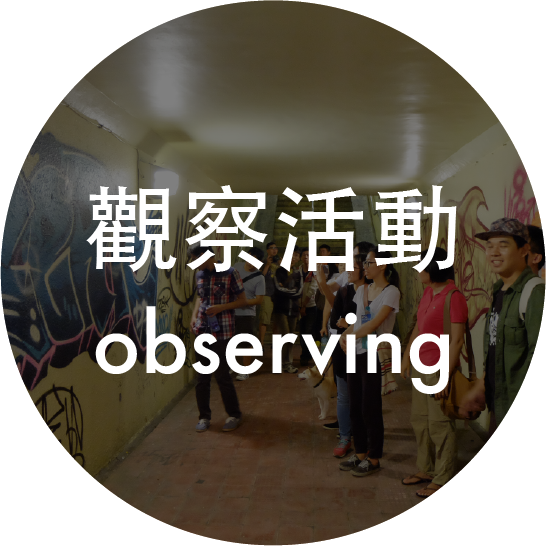

成立兩年以來，台南路上觀察團多以特定場域或議題作為觀察內容，如：城市記號、觀光、舊魚市場、公園等， 試圖讓個人透過觀察，與環境、社會產生更多討論。第三年起，我們試著將觀察視野回歸生活，以「日常生活」為 場域，透過在地人與外來者兩者的觀察視角，進行觀察交換。
｜地圖互贈計畫01：宛儀的日常
出團時間：2017/08/27（日）16:00-19:00
集合地點：祝三多廟(台南市東區東門路一段63號)
觀察場域：東門圓環一帶

｜路上觀察no.23：一個這樣作為都市空間的存在
出團時間：2017/09/09（六）10:00-12:00 (場次A)、15:00-17:00 (場次B)
集合地點：牖室（台南市國華街二段123巷-22）
觀察場域：永樂市場周圍
報名連結：點此
過去活動

｜觀察小聚
共讀書目：《路上觀察學入門》、《空間就是想像力》、《設計的心理學》
觀察分享：
- 歸綏街性產業（分享者：簡維新）
- 澳門/北韓觀察分享
- 10x10自由暢談
- 海安異都（分享者：林浩瀚）
- 台南走路人聚會（分享者：林思駿/觀察團）
- 路上觀察一人一書
- 觀察共食

｜共讀書目
《路上觀察學入門》、《空間就是想像力》、《設計的心理學》
｜觀察活動
- 小組觀察－「樹下」、「市場」、「建築物與附屬裝置」、「機車上的隨身包」、「高鐵的等待」、「成大無障礙」、「只剩一感」、「人臉」
- 七夕限定情侶觀察
- 打開觀察員的包
- 湯瑪森搜查
- 高跟鞋教堂觀察
｜觀察計畫
- 牛肉湯觀察松（2015/09/05）
- 歷史街區調查（2015/11/22）
- 台南公園觀察野餐趴（2016/03/13）
- 府城城牆觀察松（2016/04/09）
- 321巷綠建築觀察（2016/06/18）
- 塗鴉客帶路！城市記號觀察（2016/10/14）
- 觀光凝視：正興X神農（2017/02/19）
- 運河日記2017.04（2017/04/29）
地圖互贈計畫01：宛儀的日常（即將舉行）